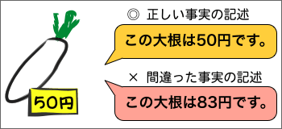
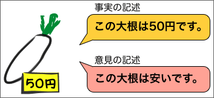
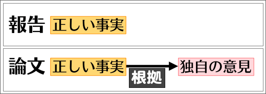

事実と意見の区別
論文やレポートでは、事実と意見とを区別する必要がある。
事実とは
「事実」とは、誰でも経験できる（見たり、聞いたり、触ったり、知ったりできる）物事のことである。事実は、（科学的な・厳密な）調査や実験によって確認できる。そのため、事実を記述した文は、正しい（本当）か間違い（ウソ）かのどちらかである。
「この大根は50円です。」は事実を記述した文である。大根が50円だというのは、誰でも経験できることだからである。
また、「この大根」が「50円」であるかどうかは、調査によって確認することができる。そのとき、「この大根」が《50円》であれば、「この大根は50円です。」という文は正しい文である。他方、「この大根」が《80円》であれば、「この大根は50円です。」という文は間違った文である。いずれにしても、「この大根は50円です。」という文は、正しいのか間違っているのか決めることができるという点が重要である。

なお、事実を記述する文が、常に正しい事実を記述しているというわけではない。たとえば、50円の大根を見て「この大根は83円です。」といっても、それも事実を記述する文だといえるのである。ただし、大根が50円であれば、この文は間違った事実を記述していることになるわけである。つまり、この場合も、正しいのか間違っているのかを簡単に決めることができるという点が重要なのである。
事実を記述する文の基本的な形は、『……である。』という形である。
意見とは
「意見」とは、自分の判断や自分の考えのことである。意見は、個人的なものであり、調査や実験によって確認できないものもある。そのため、意見は、正しいか正しくないか決められないこともある。

「この大根は安いです。」は、意見を記述した文である。大根が安いかどうかは、個人的な判断であり、それを安いと感じる人もいるだろうが、高いと感じる人もいるかもしれない。
大根が高いか安いかを決める基準は個人的なものなので、「この大根は安いです。」が正しいかどうかを簡単に決めることはできない。
したがって、正しい事実には誰もが同意するはずだが、意見には同意しない者もいるだろう。たとえば、「この大根は50円です。」が正しく事実を記述しているならば、すべての人が同意するはずである。一方、「この大根は安いです。」がいくら正しそうに思えても（注：日本では、大根は150円くらいがふつうである）、誰もが同意するとは限らないわけである。
意見を記述する文の基本的な形は、『……と考える。』という形である。つまり、「この大根は安いです。」という文は、「『この大根は安いです』と考える。」という形だと見なすことができるのである。
事実と意見の違い
リチャード・ニクソンはアメリカの第37代大統領であった。
は、事実を記述した文である。『リチャード・ニクソン』という人物は、『アメリカの第37代大統領』であったか、『アメリカの第37代大統領』ではなかったかのどちらかである。また、そのどちらであるのか（『アメリカの第37代大統領』であるのかないのか）は、簡単な調査で決めることができるはずである。
リチャード・ニクソンはアメリカの優れた大統領であった。
は、意見を記述した文である。『リチャード・ニクソン』という人物が『アメリカの大統領』だったかどうかは簡単な調査で決めることができるだろう。しかし、『リチャード・ニクソン』という人物が『アメリカの大統領』だったとしても、『優れた大統領』だったのかどうかは簡単には決められない。優れていたと評価する人もいるかもしれないし、優れていなかったと評価する人もいるかもしれない。あるいは、ある点では優れていたが、別の点では優れていなかったという評価もあるかもしれない。
なお、このような場合は、
リチャード・ニクソンはアメリカの優れた大統領であったと考える。
のように書けば、事実ではなく意見であることがはっきりする。
- 事実（じじつ）
-
- 誰でも経験できる物事
- 調査や実験でかならず確認できる
- 正しいか正しくないかのどちらか
- 「………である。」
- 意見（いけん）
-
- 自分の判断や自分の考え
- 調査や実験で確認できないこともある
- 正しいか正しくないか決められないこともある
- 「………（である）と考える。」
- 「これは、建設から30年経ったビルだ。」→事実の記述
- 「これは、古いビルだ。」→意見の記述
- 「これは、建設から30年経った古いビルだ。」→意見の記述
- 「これは、隣のビルよりも古いビルだ。」→事実の記述
- 「このビルは、建設から30年経っている。」→事実の記述
- 「この古いビルは、建設から30年経っている。」→意見の記述
「古い」というのは個人的な判断であり、正しいかどうか簡単には決められない。したがって、意見の記述である。ただし、「ＡはＢより古い」は、正しいか正しくないかのどちらかに必ず決められるので、事実の記述である。
意見を表明している事実
事実と意見とは異なるものである。ただし、〈ある意見を表明していること〉は事実になる。正しいか正しくないか、どちらかに必ず決められるからである。
たとえば、
リチャード・ニクソンはアメリカの優れた大統領であった。
というのは意見を記述した文である。しかし、
彼は、リチャード・ニクソンはアメリカの優れた大統領であったと言っている。
というのは事実を記述した文である。また、
リチャード・ニクソンはアメリカの優れた大統領であったと評価する人がいる。
というのも事実を記述した文である。このように、誰かが特定の意見を表明していることは事実になるのである。
ただし、意見を表明している『誰か』が書き手であるときには、事実でなく意見になる。たとえば、
私は、リチャード・ニクソンはアメリカの優れた大統領であったと評価している。
というのは意見を記述した文である。この文は、
私は、リチャード・ニクソンはアメリカの優れた大統領であったと考えている。
というのと、同じ内容を表わしているからである。
意見と判断
重要なことは、『意見』とは、何かに対する判断だということである。そして、『意見』は、判断の仕方によって、推測、評価、確信、結論、理論、法則などに区別できる。
- 推測（すいそく）
- ある事柄をもとにして得られた考えのこと
→「（夕焼けだから）明日は雨が降るだろう。」「（対立候補が強いので）おそらく彼は落選する。」
- 評価（ひょうか）
- 内容の優劣や価値の高低を定めたもの
→「彼女のアートは優れたものだと評価できる。」「彼の行動は英雄的だといえる。」
- 確信（かくしん）
- 自分が固く信じている、あるいは確実だと思っている考えのこと
→「現政権はいずれ崩壊するに違いない。」「市民による革命を起こさなければならない。」
- 結論（けつろん）
- 議論や考察などを通してまとめられた最終的な考えのこと
→「状況を総合的に判断すれば、今回の事故原因は整備ミスであると考えられる。」
- 仮説（かせつ）
- 対象を説明・理解するために仮に立てられた考えのこと
→「今回の事件は複数犯の可能性がある。」「地震には潮汐が関係していると考える。」
- 理論（りろん）
- 対象を説明・理解するために体系的に構築された知識や考えのこと
→「生物は自然淘汰によって進化する。」
信頼できる意見と信頼できない意見
判断とは、ある基準に従って自分の考えを決めることである。そして、その基準がどのようなものかによって、信頼できる意見と信頼できない意見とに分かれるのである。
論文やレポートでは、信頼できる意見が述べられなければならない。そのためには、根拠のない判断は避けなければならない
- 近年、台湾の気温は非常に高くなってきている。 →根拠は？
- 小林英夫は優れた言語学者である。 →根拠は？
- 死刑は廃止すべきである。 →根拠は？
意見と根拠
意見を述べるときには、それがどのような意見であっても、根拠を示しながら述べるべきである。根拠を示さずに意見だけを述べても説得力があるものにはならないだろう。
一般に、意見の根拠となるものは（正しい）事実である。たとえば、『ジネディーヌ・ジダンは優れたサッカープレイヤーである。』という意見を述べるのならば、『1998年に欧州最優秀選手に選出された。』や『FIFA最優秀選手賞を３度受賞した。』といった事実を根拠として示した方がよい。また、すでに述べたように「誰かが特定の意見を表明していることは事実になる」ので、他者の意見を引用するのもよいだろう。【参考→引用の方法】
事実と意見の区別
事実と意見とは、区別して書かれなければならない。特に、論文やレポートでは、意見を事実であるかのように書いてはいけない。
たとえば、次のようなものは事実を書く書き方で書かれた文である。
- 多くの住民が死亡した爆発は、米軍の爆撃によるものである。
- 多くの住民が死亡した爆発は、米軍の爆撃によるものであった。
しかし、何かを『明らかに正しい事実』として書くのならば、その明確な証拠を示すことができなければならない。明確な証拠がなければ、正しい事実であると認めることはできないのである。【参考→事実と証拠】
そのため、そのことを書き手自身がどんなに信じていたとしても、明確な証拠がない限りは、自分個人の意見として書かなければならないということになる。
たとえば、上の例では、米軍にとって不都合なことは多くのケースで隠蔽されるため、「米軍の爆撃」が「多くの住民」を「死亡」させた確実な証拠を得ることは困難であろう。したがって、次のように、意見であることがわかるように書くべきである。
- 多くの住民が死亡した爆発は、米軍の爆撃によるものと思われる。
- 多くの住民が死亡した爆発は、米軍の爆撃によるものと考えられる。
- 多くの住民が死亡した爆発は、米軍の爆撃によるものと推測される。
- 多くの住民が死亡した爆発は、米軍の爆撃によるものである可能性が高い。
より強く訴えたい場合は、たとえば次のようになる。
- 多くの住民が死亡した爆発は、米軍の爆撃によるものと確信している。
- 多くの住民が死亡した爆発は、明らかに米軍の爆撃によるものである。
- 事実（じじつ）
-
- 「（事実は）………である。」の形で表わされる
- 正しい事実であることを証明するには証拠を示さなければならない
- 意見（いけん）
-
- 「（私は）………（である）と考える。」の形で表わされる
- 説得力のある意見であるためには根拠を示さなければならない
正しい事実の重要性
報告は、事実を書くものであるから、事実が重要であることはいうまでもない。報告では、関係する事実を正確に把握することが重要になる。【参考→報告とは？】
一方、関係する事実を正確に把握するだけでは論文にならない。論文は、事実に対する判断を書くものであるから、事実を分析して、意見を表明・主張しなければならない。【参考→論文とは？】

しかし、論文が意見を表明・主張するものだからといって、事実が重要でないことにはならない。論文では、事実を基本として、それに対する意見を主張することが重要である。あるいは、論文で主張する意見には、事実による裏づけが重要になるのである。